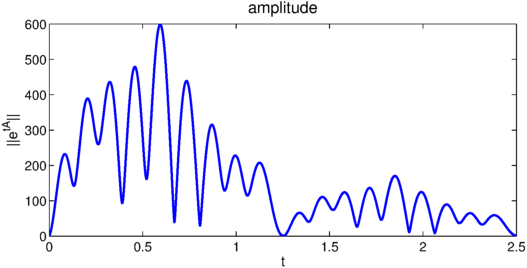
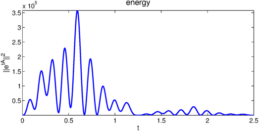

If $A$ is a matrix whose eigenvalues are in the open left half of the complex plane, then the corresponding dynamical system defined by the equation $\frac{du}{dt} = Au$ is asymptotically stable, with all solutions decaying to zero as $t \to \infty$. Since the solution is $u(t) = e^{tA} u(0)$, another way to say this is that the quantity $| e^{tA} |$ decays to zero as $t \to \infty$.
Along the way, however, there may be transient growth, and this is important, for example, in some problems in fluid mechanics. A recent paper by Whidborne and Amar [2] considers the following matrix taken from an earlier paper by Plitschke and Wirth:
tic
A = [-1 0 0 0 0 0 -625; 0 -1 -30 400 0 0 250; -2 0 -1 0 0 0 30;
5 -1 5 -1 0 0 200; 11 1 25 -10 -1 1 -200;
200 0 0 -150 -100 -1 -1000; 1 0 0 0 0 0 -1]
A =
Columns 1 through 6
-1 0 0 0 0 0
0 -1 -30 400 0 0
-2 0 -1 0 0 0
5 -1 5 -1 0 0
11 1 25 -10 -1 1
200 0 0 -150 -100 -1
1 0 0 0 0 0
Column 7
-625
250
30
200
-200
-1000
-1
Here (adapted from linalg/NonnormalQuiz) is a code to compute and plot $| e^{tA} |$ as a function of $t$:
e = chebfun(@(t) norm(expm(t*A)),[0 2.5],'vectorize','splitting','on');
LW = 'linewidth'; FS = 'fontsize'; plot(e,'b',LW,2)
xlabel('t',FS,14), ylabel('||e^{tA}||',FS,14)
title('amplitude',FS,16)
Warning: Function not resolved using 6050 pts.

Actually Whidborne and Amar plot the square of this function. The following figure matches their Figure 1.
e2 = e.^2;
plot(e2,'b',LW,2)
xlabel('t',FS,14), ylabel('||e^{tA}||^2',FS,14)
title('energy',FS,16)

They are interested in calculating the maximum energy:
fprintf('Maximum energy = %15.8f\n',max(e2))
Maximum energy = 358147.98785176
Here's the time for this Example:
toc
Elapsed time is 11.016822 seconds.
References
-
L. N. Trefethen and M. Embree, Spectra and Pseudospectra: The Behavior of Nonnormal Matrices and Operators, Princeton U. Press, 2005.
-
J. F. Whidborne and N. Amar, Computing the maximum transient energy growth, BIT Numerical Mathematics, 51 (2011), 447-457.